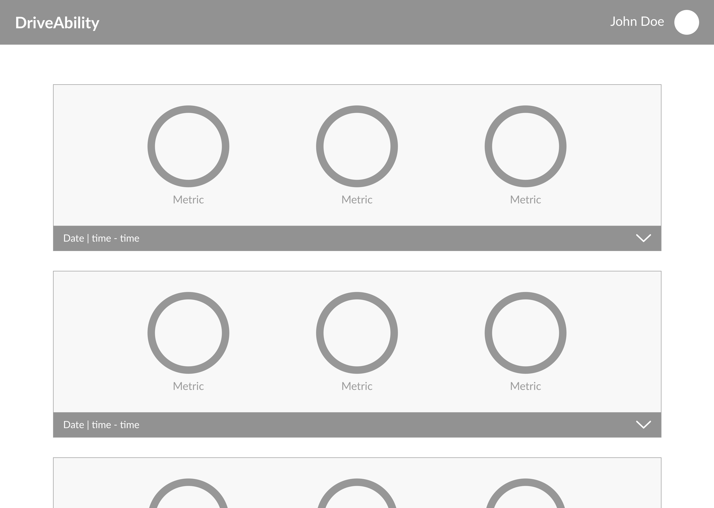

DriveAbility
Web
Background
DriveAbility is a web application that displays driving habits based off data retreived from a camera.
This project was designed by me and built by amazing team members at DubHacks. The idea of building this project was spawned after a team member was hit by a car driven by a distracted driver.
DriveAbility won Best Travel Hack and Most Innovative Use of Data.
This project was designed by me and built by amazing team members at DubHacks. The idea of building this project was spawned after a team member was hit by a car driven by a distracted driver.
DriveAbility won Best Travel Hack and Most Innovative Use of Data.
Data and Statistics
- In 2014, 3,179 people were killed, and 431,000 were injured in motor vehicle crashes involving distracted drivers.
- 10% of all drivers 15 to 19 years old involved in fatal crashes were reported as distracted at the time of the crashes. This age group has the largest proportion of drivers who were distracted at the time of the crashes.
- Drivers in their 20s are 23% of drivers in all fatal crashes, but are 27% of the distracted drivers and 38% of the distracted drivers who were using cell phones in fatal crashes.
- The percentage of drivers text-messaging or visibly manipulating handheld devices increased from 1.7% in 2013 to 2.2% in 2014. Since 2007, young drivers (age 16 to 24) have been observed manipulating electronic devices at higher rates than older drivers.
Role
UI designer and front-end developer
Problem
The automotive industry has spent years trying to improve driver safety by enabling features that simplify operation and take responsibility from the driver. This, combined with the growing amount of distractions due to mobile tech is arguably creating inferior drivers and a hazardous environment for others.

Solution
We decided to use Microsoft's Kinnect camera for our project to use facial recognition metrics to rank driver awareness. By following eye and mouth movements, we can record metrics to track distraction and mood. In particular, we analyze smiling, head angle and eye focus. In addition this data is synchronized with map and speed information to develop driving trends and point out hazardous patterns or reward improvements.
In particular, the tracked metrics are distractedness, phone usage, and happiness, but more could be added such as hand position and center of gravity.
The metrics are logged on a web app accessible from browsers. It is designed to be simple and easy to understand. An overall score is determined every drive, as well as specific categories for more detail. A user can look at a timeline map that displays markers on the coordinates of significant distraction events. Ideally patterns may emerge and habits may change.


In particular, the tracked metrics are distractedness, phone usage, and happiness, but more could be added such as hand position and center of gravity.
The metrics are logged on a web app accessible from browsers. It is designed to be simple and easy to understand. An overall score is determined every drive, as well as specific categories for more detail. A user can look at a timeline map that displays markers on the coordinates of significant distraction events. Ideally patterns may emerge and habits may change.
Microsoft Kinnect on car's dashbaord
Up close of Microsoft Kinnect
Goal
We think that by providing metrics for driver awareness and mood, we can inspire positive changes in driving habits and an added appreciation for driving smart and safe.
Ideate
I noted what we needed to create a minimal viable product:
I also thought including the user's name and picture would be nice to have as well. Based off this information I designed the first iteration:
I initially thought of using a sidebar because I wasn’t sure how many features in the future I would add. A sidebar would allow me to easily add more features without having to make a drastic change to the UI or user flow. The team and I even discussed a reward system for driving safely. In the end we decided to exclude it due to time constraints.
I noted more useful information for the driver: duration of drive, distance traveled, time distracted, time focused, map of route. I also realized that we didn't have enough time to get all feature heavy. With that in mind I sketched the second iteration:
I decided to change up navigation from a sidebar to a nav bar at the top. The nav bar on top makes elements on the screen look more symmetrical which adds balance to the design, making the user feel more comfortable.
Only the most essential information is displayed initially. If a user wants to learn more about a drive, they can click on the date or arrow for a dropdown. The dropdown includes secondary information, such as a map of their route and time they were distracted and focused.
- Percentages for metrics (distractedness, phone usage, happiness)
- Date
- Start and end time
I also thought including the user's name and picture would be nice to have as well. Based off this information I designed the first iteration:
I initially thought of using a sidebar because I wasn’t sure how many features in the future I would add. A sidebar would allow me to easily add more features without having to make a drastic change to the UI or user flow. The team and I even discussed a reward system for driving safely. In the end we decided to exclude it due to time constraints.
I noted more useful information for the driver: duration of drive, distance traveled, time distracted, time focused, map of route. I also realized that we didn't have enough time to get all feature heavy. With that in mind I sketched the second iteration:
I decided to change up navigation from a sidebar to a nav bar at the top. The nav bar on top makes elements on the screen look more symmetrical which adds balance to the design, making the user feel more comfortable.
Only the most essential information is displayed initially. If a user wants to learn more about a drive, they can click on the date or arrow for a dropdown. The dropdown includes secondary information, such as a map of their route and time they were distracted and focused.
Wireframes
Home
Home Expanded

Mockups
Home
Home Expanded
Microsoft Kinnect demo
Conclusion
For participating in my first ever hackathon, I had an absolutely blast. Special thanks to Jake Garrison, Amrit Puri, and Chris Gervang. This was a team effort, and I'm glad I was a part of it.
Team DriveAbility at DubHacks Fall 2015
Side Note:
Jake ended up revisting the DriveAbility idea after the hackathon and created this demo for anyone who is interested.Live Frontend Demo
© 2015-2016 Michelle Chan.